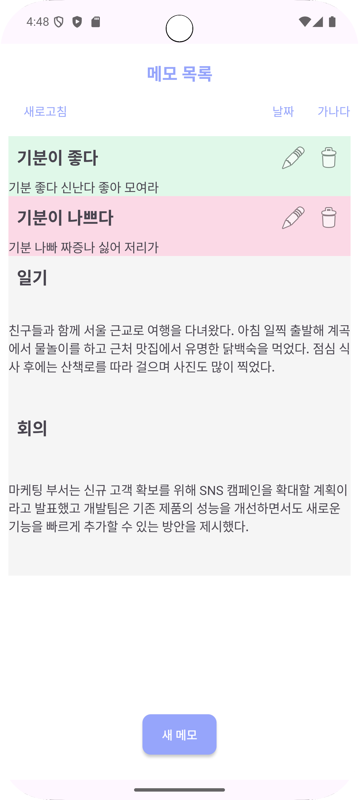
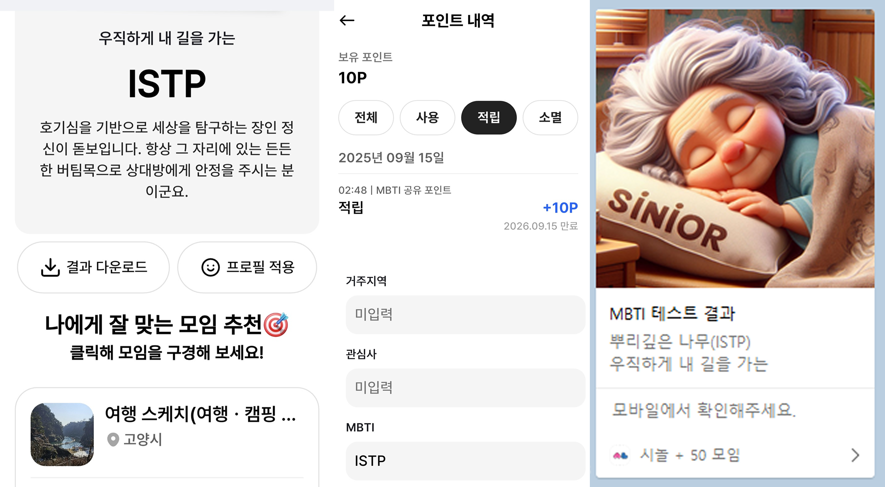

Team Project · In Progress
PPE Guard
사내망 배포형 PPE 점검 시스템
프론트엔드, Flask API, 고객사 DB를 분리해 보안성과 운영 통제성을 고려한 구조를 설계한 프로젝트입니다.
상세 페이지 보기About
예외를 임시로 막는 방식보다, 왜 이런 문제가 발생했는지 흐름과 상태를 먼저 확인하는 편입니다. 학습 과정에서도 기술을 외우기보다 동작 원리와 데이터 흐름을 이해하려고 노력해왔습니다.
Android 개발을 중심으로 시작했지만, 서버 API, 데이터 흐름, 배포 구조, 그리고 AI 모델 활용까지 직접 다뤄보며 클라이언트보다 더 넓은 관점에서 서비스를 이해하려고 하고 있습니다.
Projects
Team Project · In Progress
사내망 배포형 PPE 점검 시스템
프론트엔드, Flask API, 고객사 DB를 분리해 보안성과 운영 통제성을 고려한 구조를 설계한 프로젝트입니다.
상세 페이지 보기

Focus
API 설계, 데이터 흐름, 서비스 구조를 이해하고 구현하는 과정에 관심이 많습니다.
모델 자체보다도, 모델을 실제 서비스 흐름 안에서 어떻게 활용할지에 더 큰 흥미를 느낍니다.
입력 데이터, 서버 처리, 결과 가공과 반환까지 전체 연결 구조를 설계하는 데 관심이 있습니다.